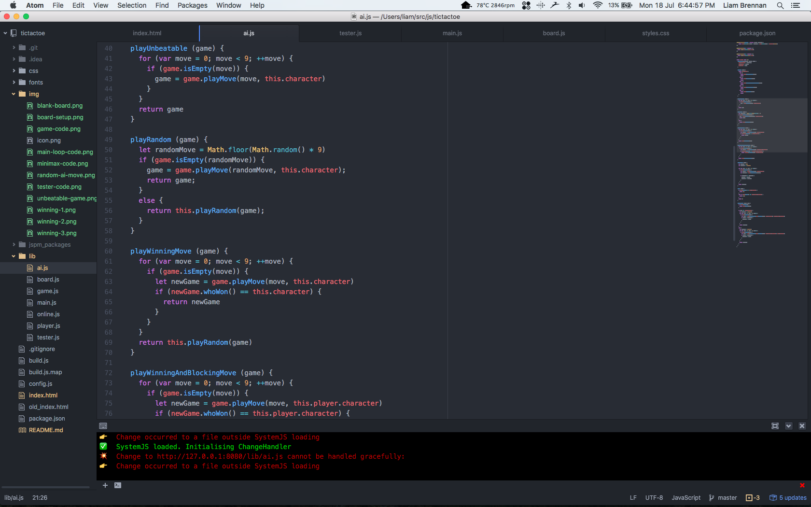

An Unbeatable tic tac toe Ai
Tic tac toe is a fairly simple game. With a maximum of 9 possible moves at any point in the game constructing an Ai isn’t incredibly hard, but it still has its implications.
The setup
Most of the code for this game is to build the board, draw it and take user input. In the end only about 50 lines of code is needed for the perfect Ai. I used Babel to code in the latest version of javascript (es6) and went form there. I also opened a git repo here to keep my code safe.
First things first, get jspm working (easier said than done)
After trying out Webpack I moved onto Jspm, another web server and found ti more succesful. So I npm installed a few libraries and got babel running (for es6 javascript) and started work on the game board.
Game Board
At the start of the game the board is initiated and it builds an array to draw from onto the canvas. It sets up colors and some dimensions constants then exports a Board class. It then draws the lines and sets up all the locations on screen. Once that finished it draws the board once and you can see an empty board on the screen.
Here's what the canavs looks like.
Making A Move
Next I allowed the player to make a move against an opponent that made random moves. The player clicks are read on an event function and are checked if they are in a valid location before being updated. The AI simply picks a random number form 0 - 9 and makes a move.
Checking for a win
I then created a class to check for a win and stop the game if somebody won. It used a couple of function to check vertical, diagonal and horizontal. It then returned who had won and prevented both the player and AI from making moves.

I also put together a game class to hold data like whos move it is, game state and other information so that it can all be bundled to be passed around more easily. The game class also holds the tester because it is quicker to call a whoWon() function directly from the game object.
At this point I was almost up to writing the AI but I just had to had a draw loop and some win condition code to handle a win from the player or AI. It constantly draws the board and tells the right player / AI if it is their turn and also checks the game object for a win. If someone has won, it stops the game and prints out who won.
Next up, the AI
Writing the AI
For this I was going to use the Minimax Algorithm which basically tries to make the best move for itself and force the opponent to make the worst move possible. It is the perfect algorithm for Tic Tac Toe.
Next I decided what I wanted the AI to do:
- Get given a game on its turn
- Start the minimax loop
- If the game state is terminal (somebody has won), return the score
- Otherwise if its the AI's turn, loop through each available move
- Use recursion to call itself passing in a new copy of the game and move
- Return the best move it finds
- If its not the AI's move, do the same thing but for the player (this time finding the worst move)
In code it looks like so:
I wrapped up the ai into a class and exported it into the main loop so now in the game you play an un beatable AI.
Of course it was a little harder than just writing that up and being done. It took heaps of testing and many different approaches to finally come to a working copy. It also took alot of google-ing. But once it was all setup it worked perfectly exepct for a little flaw.
The flaw is that if the AI knows that it has already won, I doesn't always take the most direct route. For instance in this senario, it know that it can't loose and so doesn't care it win now or later.
As you can see from these moves, the AI is only one move away from victory and the next move looks obvious, but I doesn't do what you expect.

Now it knows it can't loose and makes what looks like a dumb move but really, its already won.
It's Done, Right?
Well, not quite. Just for fun I decided to add a few different levels of AIs that slowly get better as you win. I wrote the functions, added a AI level display and added it into the win condition to go to the next level of AI.
And there, it's done and dusted. In fact, you can play the game up the top of this webpage!